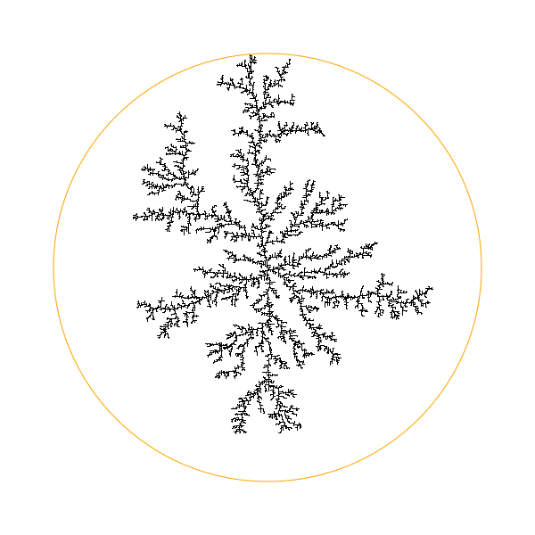
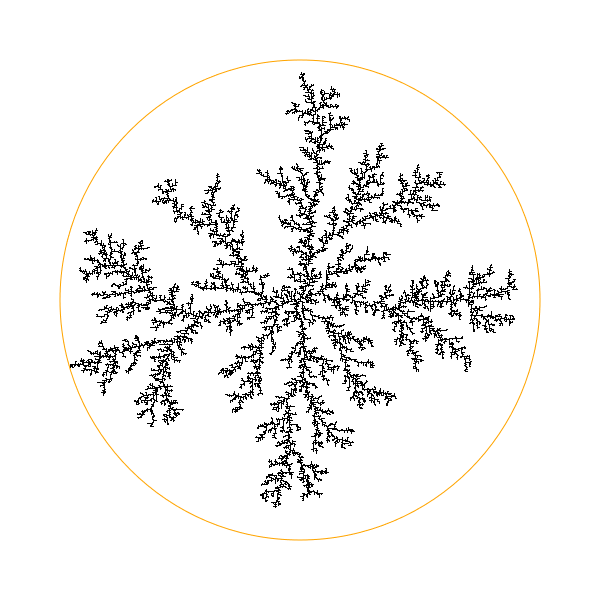
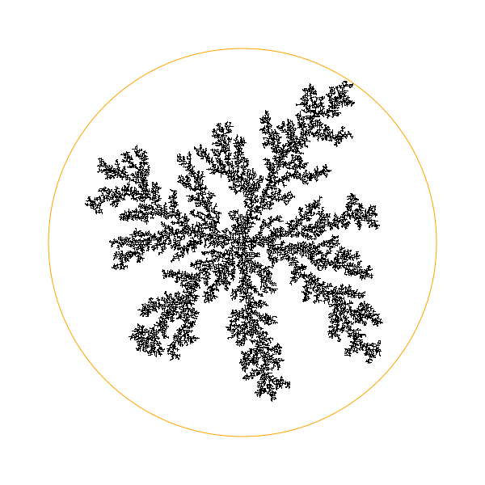
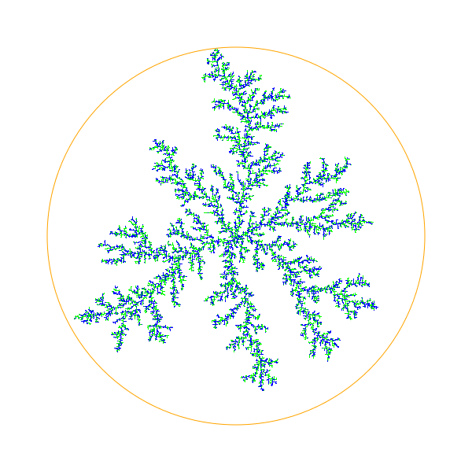
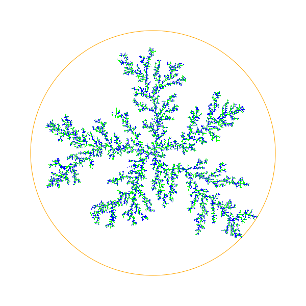
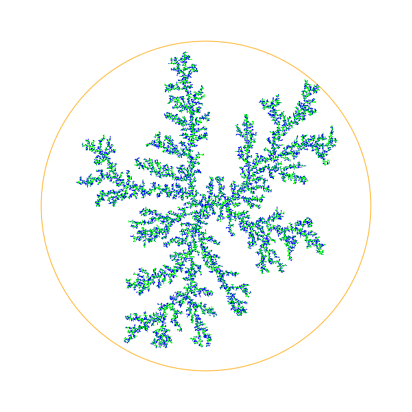
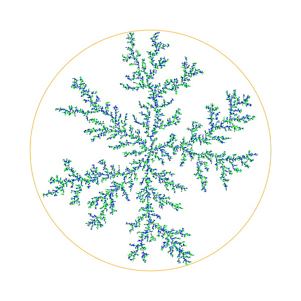
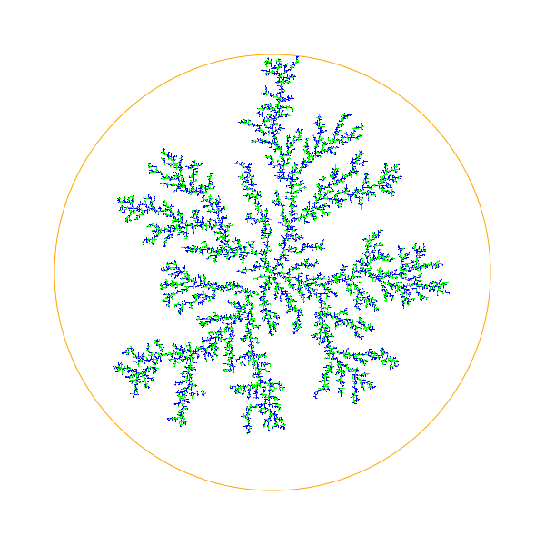

Diffusion-limited aggregation (DLA) is the process whereby particles undergoing a random walk due to Brownian motion cluster together to form aggregates of such particles. This theory, proposed by Witten and Sander in 1981, is applicable to aggregation in any system where diffusion is the primary means of transport in the system. DLA can be observed in many systems such as electrodeposition, Hele-Shaw flow, mineral deposits, and dielectric breakdown. (Wikipedia)
This JavaScript application is a computer simulation of DLA. Try it now.
We always start with a seed in the center of a grid. New particles start diffusing at a random position on a circle with fixed radius which is part of the grid. This circle is simulating the infinity. There is only one particle at a time diffusing. If this particle leaves the grid a new one starts at another random position. The particle attaches to the existing particles if it reaches a position with at least one particle in the Von Neumann neighborhood. This way a DLA cluster growths starting at the initial seed. Once a diffusing particle sticks to another particle at a position on the circle no new particles gets created. If the cluster has reached the circle the approximation of the circle to simulate infinity does no more hold at all.
A particle diffuses by drawing two random numbers δx and δy out of {−1, 0, 1} and adding the vector (δx, δy) to the current position (x, y). This way the particle moves into one of the eight possible directions up, up right, right, down right, down, down left, left, up left or stays at its position with equal probability.
In this one-grain version you can set the probability that a new particle sticks to an existing particle. If at least one particle exists in the Von Neumann neighborhood the current particle sticks to them with this probability. If it does not stick it continues diffusing but avoids positions which already contains any particle.
In the two-grain version there are two different types of particles, named 2 and 3, which are generated alternating. We always start with a particle 2 in the center of the grid. Two particles have (depending on whom to attach) a sticking probability given by the following matrix.

As sticking probability the sum of all these probabilities for the particles in the Von Neumann neighborhood of the diffusing particle is used.
All images are generated with dimension 600×600 and a circle with radius 240.
With a sticking probability of 1 we get the following cluster.

With a sticking probability of 0.5 we get the following cluster.

With a sticking probability of 0.1 we get the following cluster.

One can observe that the branches of the cluster consists of more particles the lower the sticking probability is. This can be explained by watching the movement of one particle: It starts on the circle and hits one of the outer particles of the cluster first. With high sticking probability it attaches to one of the outer particles of the cluster. With a lower sticking probability the diffusing particle does not attach to the first particle it hits and thus can diffuse deeper into the cluster.
With sticking probabilities of a = 0.1, b = 0.1 and c = 0.1 we get the following cluster.

With sticking probabilities of a = 0.1, b = 0.1 and c = 0.5 we get the following cluster.

With sticking probabilities of a = 0.1, b = 0.1 and c = 0.9 we get the following cluster.

With increasing c one can observe the same behaviour as with decreasing sticking probability in the one-grain-version. Additionally one can observe that with increasing c more type 3 particles—the blue ones—gets attaches to the type 2 particles—the lime ones. The type 2 particles form long branches whereas the type 3 particles gets attaches to any other particles and from random dot clouds.
With sticking probabilities of a = 0.9, b = 0.1 and c = 0.1 we get the following cluster.

In this picture type 2 particles—the lime ones—gets attached to any existing particle with high probability.
With sticking probabilities of a = 0.1, b = 0.9 and c = 0.1 we get the following cluster.

In this picture type 3 particles—the blue ones—gets attached to any existing particle with high probability. Therefore the type 3 particles should form longer branches, but I am not able to see that difference.
The function readOptions gets called every time the
start button is pressed. It uses jQuery
to read the options edited in the HTML input fields and sets variables
declared at the beginning of the script.
As drawing surface the
HTML5 canvas element
is used. The function
clearCanvas gets called every time the start
button is pressed. First it sets the dimension of the canvas according
to the given width, height and zoom factor. The zoom is achieved simply
by the difference of the width and height attributes of the canvas element
and the width and height set to the canvas element via
CSS.
Once the canvas has the correct size it gets cleared using
clearRect
and the circle is drawn using
arc.
The function drawPoint draws a particle with type of the
given value at the given position in the canvas. The type value gets
transformed into the corresponding color and the pixel gets painted on the
canvas using
fillRect.
The current state of the grid is internally stored in the variable
grid. This variable is a JavaScript object and is indexed
via x + y · width. A JavaScript objects
works roughly like a hash map, so storing spare matrices like this grid
is more efficient than using real arrays. (JavaScript does not have
real arrays anyway.)
The function addPoint takes the coordinates of a point and
a value and adds this point to grid, calls
drawPoint and adds the point to the list
oldPoints. In this list a fixed number of last points is kept.
These are the highlighted points and the list is used to remove the
highlighting from the canvas for every point that leaves the queue.
The function computeStartPoint returns a random start point
somewhere on the circle. This point gets computed using a random number
α out of the range [0, 2π) and evaluating
x = radius · cos(α) and y = radius ·
sin(α).
The function computePoint computes a start point with
the above function and lets it diffuse. If the particle moves out
of the grid, the inner loop ends and the outer loop starts another
run with a new start point. If a position with particles in the
neighborhood is reached the function returns the current position
if a random number out of [0,1) is lower than the specified
stickiness.
The function computePointTwo works analogue to
computePoint but using computeProp
to get the sticking probability. The function
computeProp takes the value of the diffusing particle
and the value of the neighbor particle and returns the stickiness
probability. The returned value for all neighbor particles get added
together and if a random number out of [0,1) is lower than the stickiness
computed this way the function returns the current position.
The functions step and stepTwo are calling
computePoint or computePointTwo
and addPoint to perform one step. This function is not called
in a loop but calling itself using
window.setTimeout.
This way the browsers gets back control after every particle added to the
clister and the user can see the cluster growing while it gets computed.
Finally the function start calls
the setup functions to initialize the canvas and the grid
and places the initial seed. Then it starts the first step.
The source code and this document are released on GitHub1 under the MIT Licence2.
1 http://malteschmitz.github.com/dla
2 http://www.opensource.org/licenses/MIT